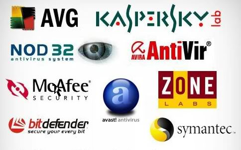

Bienvenidos a la Intro de Seguridad Informatica...¡NIVEL PRINCIPIANTE!
!!!Ojo, ellos han llegado por ti!!!...
Los virus informáticos, son software malicioso (malware), con la intención de modificar o dañar archivos de tu computador.
Antivirus Mas Usados

¿Y Que son los Antivirus?...
Los antivirus son programas que fueron creados en la década de los 80's con el objetivo de detectar y eliminar virus informáticos. Con el paso del tiempo los sistemas operativos e internet han evolucionando, lo que ha hecho que los antivirus se actualicen constantemente, convirtiéndose en programas avanzados que no sólo detectan los virus, sino que los bloquean, desinfectan archivos y previenen infecciones de los mismos. Actualmente, los antivirus reconocen diferentes tipos de virus como malware, spyware, gusanos, troyanos, rootkits, etc.